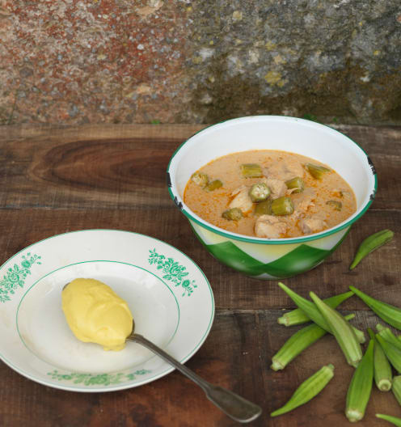

Moamba de ginguba

Decription
por 1 dose Energia: 718 kcal Proteína: 30 g Hidratos de carbono: 44 g Gordura: 46 g
Ingredients
- 500 g amendoim torrado s/ pele
- 300 g quiabos
- 2 limões, só o sumo
- 100 g tomate em pedaços
- 100 g cebola cortada em pedaços
- 3 dentes de alho
Steps
- Triture a ginguba até ficar uma pasta consistente
- Guarde a Ginguba no frio
- Triture o tomate, a cebola, os alhos e o azeite
- Adicione a moamba de ginguba e refogue por 7 minutos
- Junte a água e misture 20 segundos
- Junte o frango temperado com o sal
- Acrescente o jindungo e deixe cozer durante 30 minutos